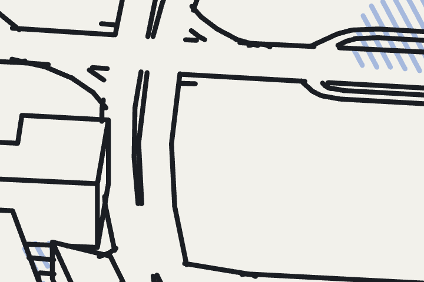
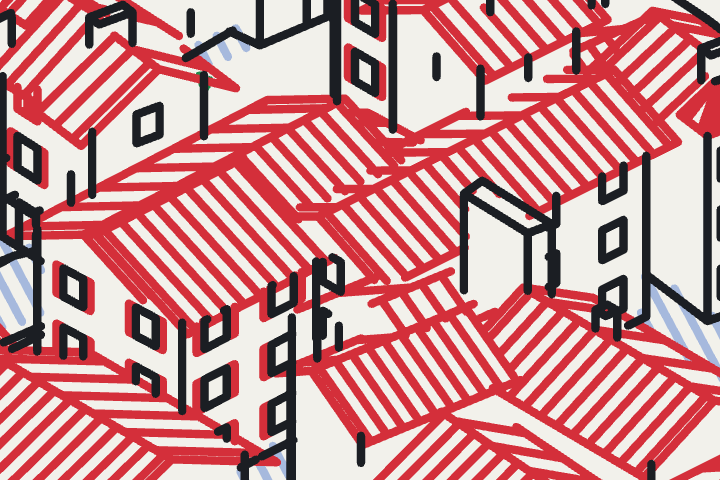
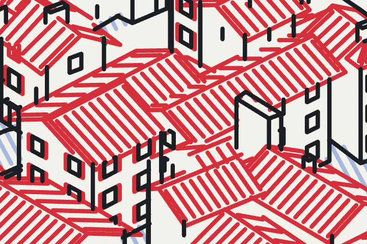

15 November 2026 · Original review
This first implementation addresses roof hatch endings, small cars, foreshortened road dashes and extraneous kerb arcs. It begins findings 2, 4, 26 and 27 of the review; it does not complete the wider texture and composition programme.



Four places at three scales, default 0.35 mm pen and Detail 1, optional OSM tags off. Time is the lab’s estimate, not a measured plotter run. Waste is a diagnostic, not an artistic score.
| Sheet | Waste before → after | Estimated time change |
|---|---|---|
| Mollis 1:1000 | 8.7% → 7.2% | -5.9% |
| Mollis 1:2000 | 12.3% → 10.6% | -10.9% |
| Mollis 1:4000 | 16.6% → 16.1% | -8.5% |
| Amsterdam 1:1000 | 8.2% → 6.8% | -4.5% |
| Amsterdam 1:2000 | 12.0% → 10.4% | -12.2% |
| Amsterdam 1:4000 | 16.0% → 15.5% | -12.5% |
| Nördlingen 1:1000 | 8.6% → 6.6% | -4.5% |
| Nördlingen 1:2000 | 12.9% → 11.1% | -9.8% |
| Nördlingen 1:4000 | 14.4% → 13.3% | -10.9% |
| Sapporo 1:1000 | 8.2% → 7.2% | -4.2% |
| Sapporo 1:2000 | 13.0% → 12.8% | -8.4% |
| Sapporo 1:4000 | 13.4% → 12.6% | -6.9% |
Before lab report · After lab report
Reviewed all 12 regenerated golden sheets, the 12 LOD whole sheets and busiest close-ups, the broad-pen monochrome golden, and the Jumeirah centre crop. Golden changes are intentional: roof texture, cars, markings and kerbs, plus small occlusion differences from the simplified car solids. Building classification and object counts remain unchanged.
Regression tests cover roof-edge clearance with both pen widths, preservation of the roof faces and outlines, small-car reduction, directional road-dash visibility and exclusion of interior bend arcs. The full suite also checks determinism, panning, gates and valid linework.
No physical paper proofs were inspected. This round does not visually certify every roof type, bearing, seed or all 29 presets after the changes. Forest and grass density, water rhythm, tower façades, palette, margins and preset compositions remain for subsequent rounds.